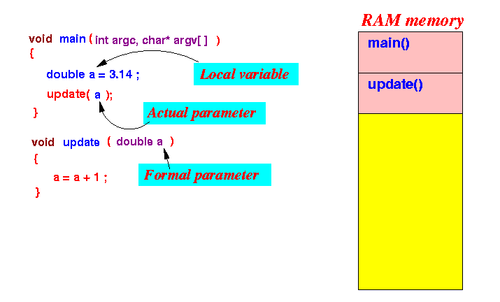
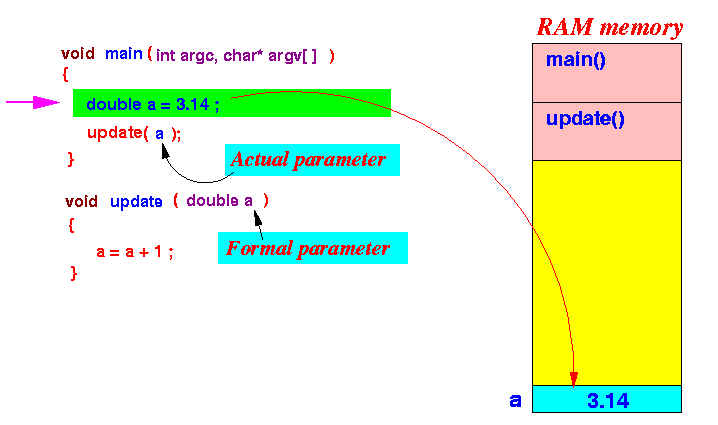
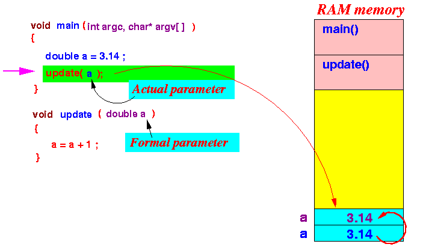
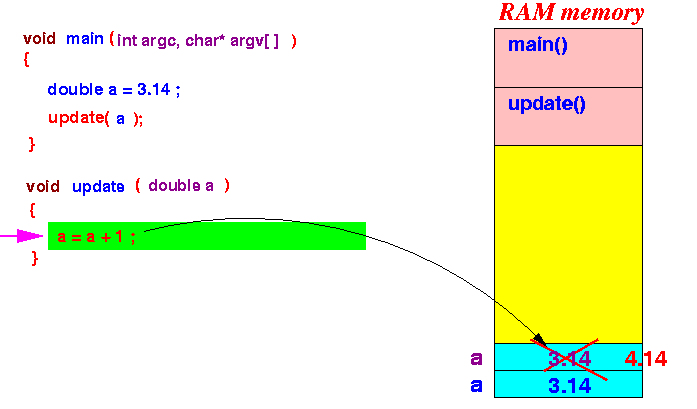
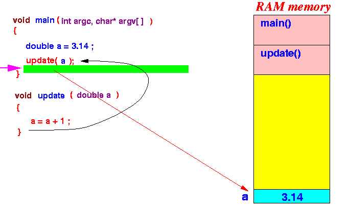

- Recall that the
2 most commonly used
forms of
parameter passing mechanisms are:
- Pass-by-value
- The value of the actual parameter variable is passed (= copied) into the formal parameter variable
- Pass-by-reference
- The location (reference or address) of the actual parameter variable is passed (= copied) into the formal parameter variable
- Pass-by-value
- If you need a refresher on
the parameter passing mechanism, here are my
CS170 material on these topics:
- CS170 notes on
pass-by-value:
click here
- CS170 notes on pass-by-reference: click here
- CS170 notes on
pass-by-value:
click here
- Parameter passing mechanism
in C:
- The C programming language
only has the
pass-by-value
parameter passing mechanism !!!
(I.e., just like Java).
- The C programming language
only has the
pass-by-value
parameter passing mechanism !!!
- However:
- The C language contains
low level
operators
(reference operator & and
de-reference operator *
discussed later)
that:
- Enable the C programmer to pass a parameter by reference !!!
The low level operators (reference operator & and de-reference operator *) will be discussed later !!!
- The C language contains
low level
operators
(reference operator & and
de-reference operator *
discussed later)
that:
- Example:
void update( double a ) // a is passed by value { printf( "Inside update - before changing a, a = %lf\n", a); a = a + 1; printf( "Inside update - AFTER changing a, a = %lf\n", a); } int main( int argc, char* argv[] ) { double a = 3.14; printf( "Inside main - before calling update(a), a = %lf\n", a); update ( a ); printf( "Inside main - AFTER calling update(a), a = %lf\n", a); }Result:
Inside main - before calling update(a), a = 3.140000 Inside update - before changing a, a = 3.140000 Inside update - AFTER changing a, a = 4.140000 Inside main - AFTER calling update(a), a = 3.140000 Unchanged !!!
- Example Program:
(Demo above code)

- Prog file: click here
How to run the program:
- Right click on link(s) and
save in a scratch directory
- To compile: gcc pass-by-value1.c
- To run: ./a.out
Explanation:
- This is the situation when the program starts in the
main() function:

- When execution reaches the variable
definition,
the local variable a
will be created on the stack:

- When execution reaches the
function invocation
,
a parameter variable
(a) is
created on the stack
and the
value of the
actual parameter is
copied (= passed)
to the parameter variable:
 The execution continues inside the update() function....
- When execution reaches the
a = a + 1
statement,
the parameter variable
(a) is
updated:

- After the function
update()
returns,
the parameter variable
(a) is
destroyed:
 Hence:
- You can clearly see that statements after the update(a) call will use a = 3.14 (unchanged).